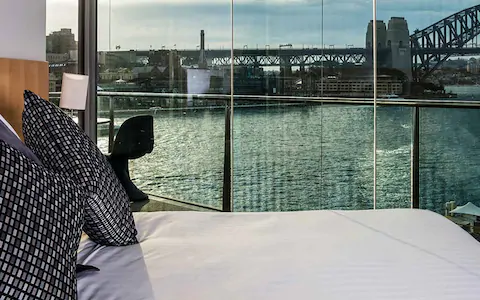
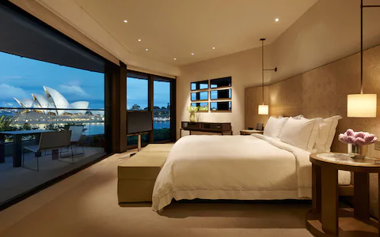
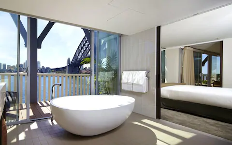
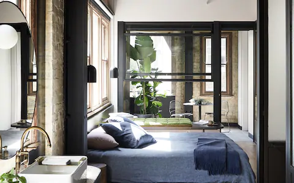
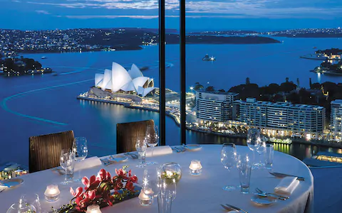

Sydney is the state capital of New South Wales and the most populous city in Australia and Oceania. Located on Australia's east coast,
the metropolis surrounds Port Jackson and extends about 70 km (43.5 mi) on its periphery towards the Blue Mountains to the west,
Hawkesbury to the north, the Royal National Park to the south and Macarthur to the south-west. Sydney is made up of 658 suburbs,
40 local government areas and 15 contiguous regions. Residents of the city are known as "Sydneysiders". As of June 2017, Sydney's estimated
metropolitan population was 5,230,330 and is home to approximately 65% of the state's population.
Indigenous Australians have inhabited the Sydney area for at least 30,000 years, and thousands of engravings remain throughout the region,
making it one of the richest in Australia in terms of Aboriginal archaeological sites. During his first Pacific voyage in 1770, Lieutenant James Cook
and his crew became the first Europeans to chart the eastern coast of Australia, making landfall at Botany Bay and inspiring British interest in the area.
In 1788, the First Fleet of convicts, led by Arthur Phillip, founded Sydney as a British penal colony, the first European settlement in Australia.
Phillip named the city Sydney in recognition of Thomas Townshend, 1st Viscount Sydney.
Penal transportation to New South Wales ended soon after Sydney was incorporated as a city in 1842. A gold rush occurred in the colony in 1851,
and over the next century, Sydney transformed from a colonial outpost into a major global cultural and economic centre. After World War II,
it experienced mass migration and became one of the most multicultural cities in the world. At the time of the 2011 census,
more than 250 different languages were spoken in Sydney.[14] In the 2016 Census, about 35.8% of residents spoke a language other than English at home.
[15] Furthermore, 45.4% of the population reported having been born overseas, making Sydney the 3rd largest foreign born population of any city in the world
after London and New York City, respectively.
Despite being one of the most expensive cities in the world, the 2018 Mercer Quality of Living Survey ranks Sydney tenth in the world in
terms of quality of living, making it one of the most livable cities. It is classified as an Alpha+ World City by Globalization and World
Cities Research Network, indicating its influence in the region and throughout the world. Ranked eleventh in the world for economic opportunity,
Sydney has an advanced market economy with strengths in finance, manufacturing and tourism. There is a significant concentration of foreign banks
and multinational corporations in Sydney and the city is promoted as Australia's financial capital and one of Asia Pacific's leading financial hubs.
Established in 1850.
5 of the best hotels in Sydney
(WORLD TELESCOPE) — In Sydney, you're never stuck for something to do, see, eat or drink--
no matter what time of the night or day it is.
But even the most energetic travelers need somewhere to take a breather.
In a destination packed with more hotels than you could visit in a lifetime,
finding the best isn't easy.
But these five are among the best the city has to offer when you stay here:
1.Pullman Quay Grand hotel

All that glitters in Circular Quay is at your fingertips
from this uber luxe establishment.
The property offers fully equipped apartment-style suites
, fine dining and one of Sydney's hottest new bars,
and hosts spectacular views of Sydney Harbour,
The Harbour Bridge and The Opera House.
2.Park Hayatt hotel

Sydney is a town obsessed with real estate
and the Park Hyatt occupies the city’s top spot,
offering panoramic views of Sydney Harbour,
The House and The Bridge.
Highly trained staff, a fine dining restaurant,
rooftop pool and elegant spa,
make this hotel a truly luxurious experience.
3.Pier One hotel

Pier One benefits from a superb location
underneath Sydney Harbour Bridge.
The hotel occupies a historic
building that has been updated with bespoke fittings
and has a nonchalant elegant vibe,
making this a coveted spot in which to relax
and take in Sydney Harbour at her glittering best.
4.Paramount hotel

Sydney’s Paramount Building has long been known
as the coolest spot in which to dine, drink,
work and play. Now it has become the hippest place
to stay, too – where else can you take a rooftop boxing class,
catch the latest Wes Anderson film
and check-in while sipping on a locally brewed sour beer
5.The Shangri hotel

The Shangri-La distinguishes itself among the cluster
of five-star chain hotels in Sydney’s Circular
Quay with its famous Level 36 Horizon Bar,
where you can drink with a view. The fine dining,
on-point service and a holistic spa
and wellbeing centre doesn’t hurt either.